Урок #1: Настройка и Создания Первого Уровня.
Для создания HL2 уровней в движке Source Engine, используя редактор Hammer Editor, необходима купленная копия Half-Life 2. Если у вас нет купленной копии HL2, можете приобрести её здесь (если есть, перейдите ниже): ссылка на скачивание.
У вас будет один или другой вариант, как показано на картинке. Необходимо просто скачать архив "Half-Life 2.rar". Вам понадобится ~4 Гигабайта на вашем компьютере (Включая архив и распакованные файлы), поэтому проверьте что место на вашем компьютере достаточно.
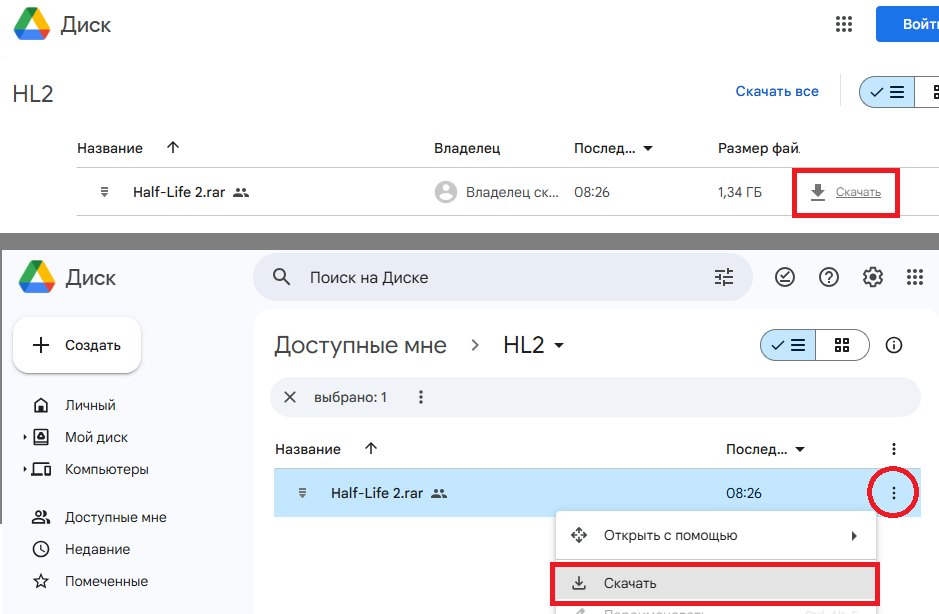
Архив должен скачаться к вам в "Загрузки". Если у вас файл просто белый лист (📄), вам необходим архиватор, для создания и распаковки архивов. WinRAR или 7zip. Установите эти программы на вашем ПК.
Перенесите архив в удобное место, например в "Документы" или куда вам удобно.
Далее распакуйте архив, используя WinRAR или 7zip. Нажмите ЛКМ, чтобы выделить, а потом ПКМ чтобы открыть контектсное меню и выберете соответственные действия (экспортировать здесь или что-то такое), как на картинке.
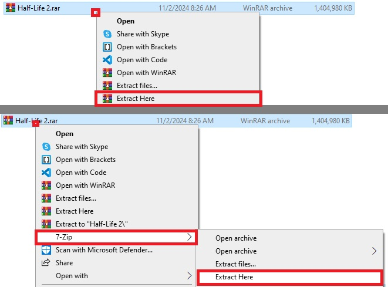
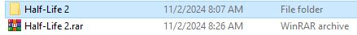
Появится распакованная папка "Half-Life 2". В ней удалены стандартные уровни игры, чтобы снизить размер, зато доступны все необходимые файлы для создания своих уровней.
Если у вас есть установленная копия HL2 в Steam, вы можете найти такую же папку у себя по пути "Program Files/Steam/steamapps/common/Half-Life 2"
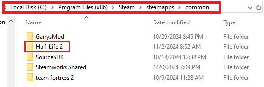
Переходим в папку "bin" чтобы найти редактор Hammer Editor. Он будет называться просто как "hammer" или "hammer.exe". Откройте эту программу.
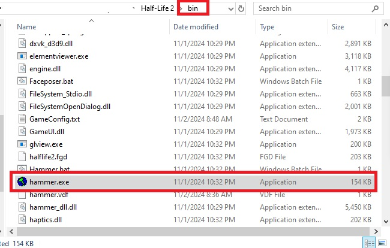
Если выйдет ошибка, которая говорит что "gameinfo.txt" отсутсвует, это значит, что файл "GameConfig.txt" неправильно указывает путь.
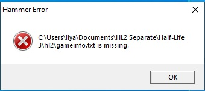
Если выйдет ошибка, которая говорит что "gameinfo.txt" отсутсвует, это значит, что файл "GameConfig.txt" неправильно указывает путь. Удалите текстовой файл "GameConfig" и снова попробуйте открыть hammer. На второй картинке ниже показано как этот файл выглядет, если его открыть. Можете сверить, что вы выбрали правильный файл, и удалить его полностью из папки "bin"
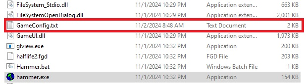
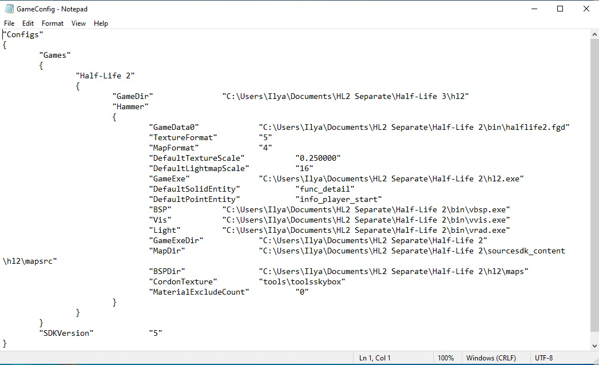
Запускаем hammer и откроется вот такой вид. Теперь создадим очень простой первый уровень. Откроем новый файл слева сверху.
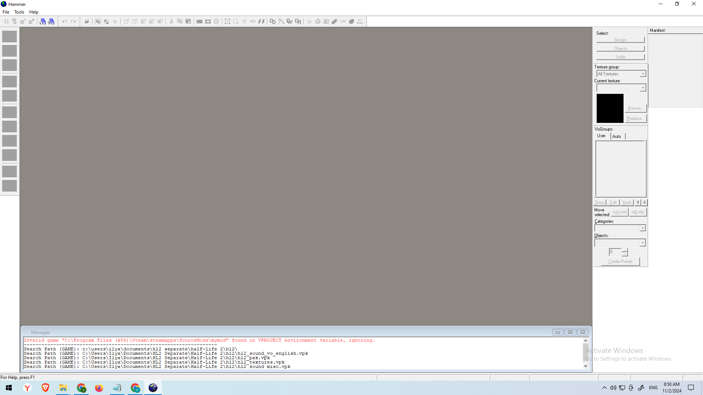
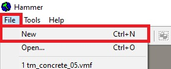
Можете поменять размер окон, которые появится. Делайте это очень аккуратно, программа старая, если что-то открепить, резко двигать или лишнее что-то нажать, вы можете оказаться в неисправной ситуации и придется занаво устанавливать программу (в крайнем случае).
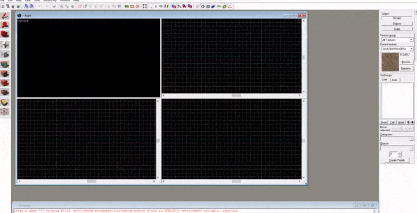
Четыре окна таковы:
- Камера - 3D Вид
- Вверх 2D (top) - X/Y
- Перед 2D (front) - Y/Z
- Бок 2D (side) - X/Z
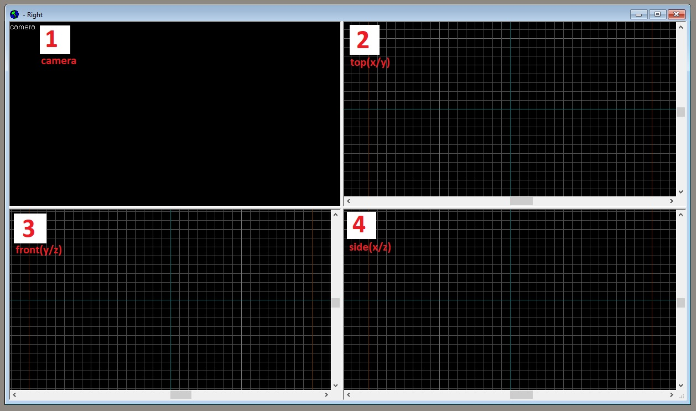
Теперь создадим простую фигуру, буквы "H". Начнем с инструмента "белый кубик". Выберем этот инструмент на левой панели инструментов, и в окне "вверх top" нарисуем кубик. Зажимаем ЛКМ и тянем. Чтобы применить фигуру (а это желательно делать сразу, даже если она не до конца настроена), нужно нажать ENTER на клавиатуре.
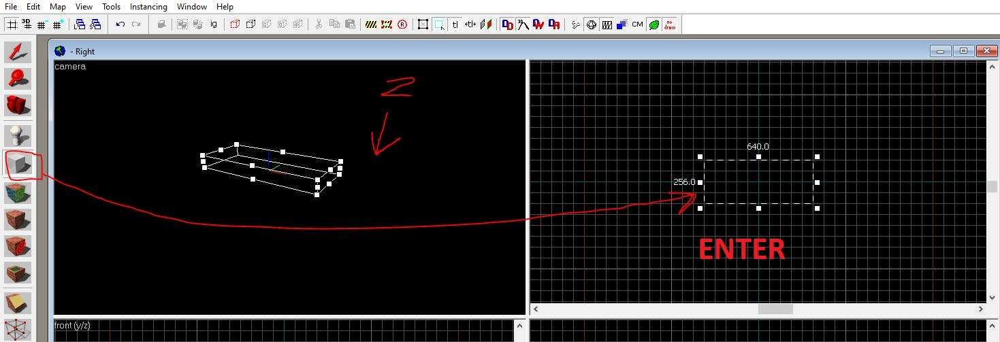
Чтобы использовать камеру в 3Д виде, нужно навести курсор мыши на это окно и нажать кнопку Z. Теперь вы можете осматриваться и передвигаться используя WASD. Чтобы перестать использовать камеру, нажмите еще раз Z.
Используя инструмент выделения (красная стрелка, первый инструмент левой панели), можно созданную фигру перемешать и менять её размер, если она выделена. Чтобы снять выделение, нажать на пустоту в окнах, а чтобы снова выделить, нажать на объект в 3Д виде, или на края объекта в 2Д видах.
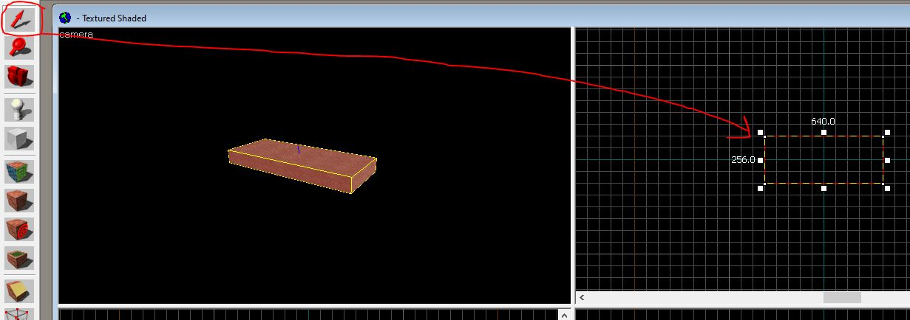
Дорисуйте буквы "H" в виде сверху. Обратим внимание как фигура выглядет в разных окнах. Важно понимать для чего каждое окно, и как оно показывает нам уровень. Окно "вверх" позволяет менять долготу и ширину, а окна "сбоку" и "спереди" помогает менять высоту. Они необходимы для процесса создания карт (уровней).
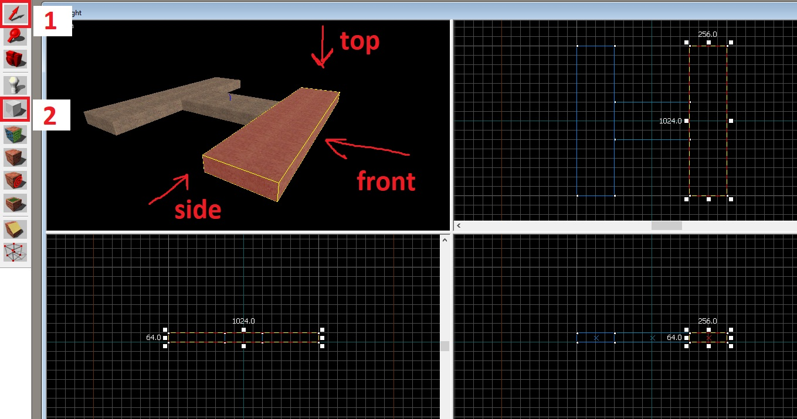
Видео демонстрация создания буквы "H".
Далее, поставим точку спавна используя инструмент похожий на белую "пешку". При выборе пешки, просто щелкаем на то место, где хотим поставить спавн.
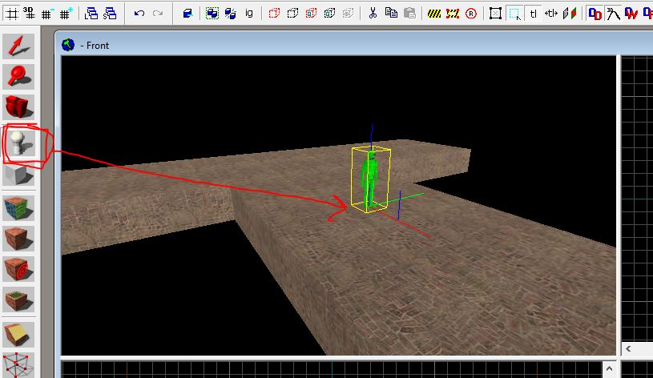
Теперь, используя инструмент "белый кубик", создадим оболочку вокруг нашей буквы H. В движке Source Engine весь уровень всегда должен находится внутри какой-то оболочки, иначе будут утечки, которые приводят к серьезным ошибкам. Постарайтесь создать оболочку как на картинке.
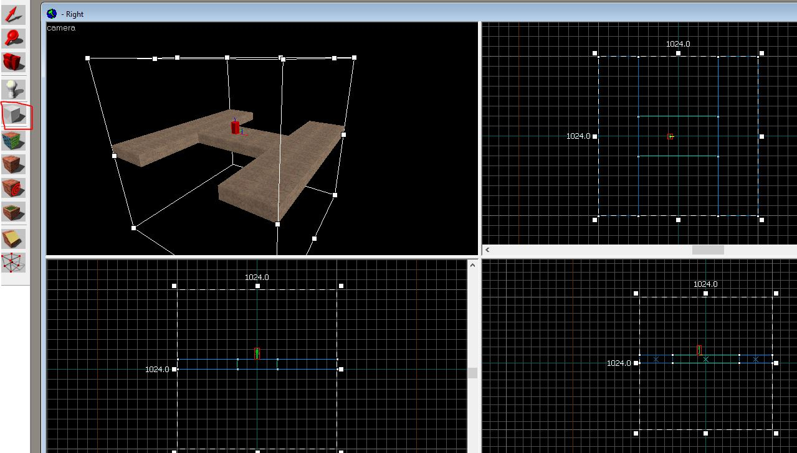
При применении фигуры, выделите её (если она уже не выделена) и нажмите ПКМ по ней в любом 2Д окне. Выберете действие "Make Hollow" - Сделать Пустым.
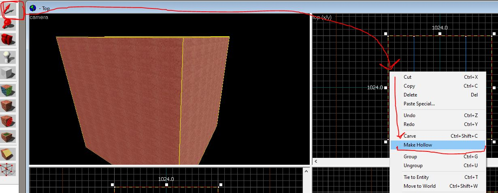
Пишем значение "-32", для создания стен, шириной 32 в наружу.
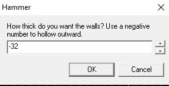
У вас объект, который был наполнен и без пространтсва внутри, теперь будет иметь пустое место. Можно залететь внтурь, и увидеть, что образовалась комната. Также, на 2Д окнах, куб который мы создали, теперь состоит из множество кубиков, соединенных так, что они формируют квадратную оболочку.
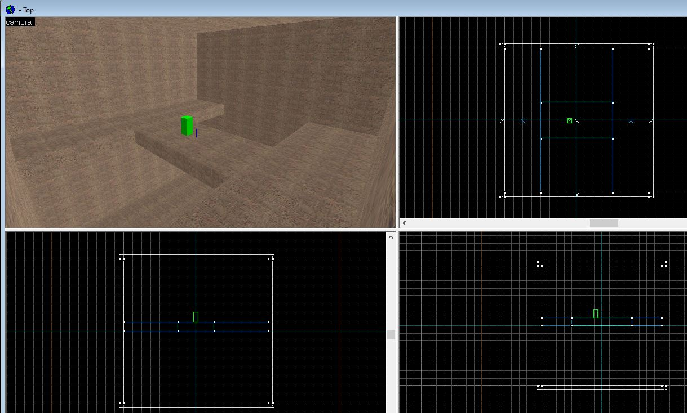
Сохраним нашу работу, нажав на "Save" в "File". Подпишем название карты как "first_map_001" (Первая Карта 001). Используем такой формат названий, только английские буквы, только нижние подчеркивание вместо пробелов. Если вы назавете с пробелами или используя не английские символы, карта не запуститься.
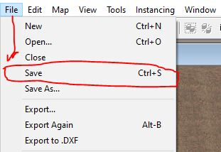
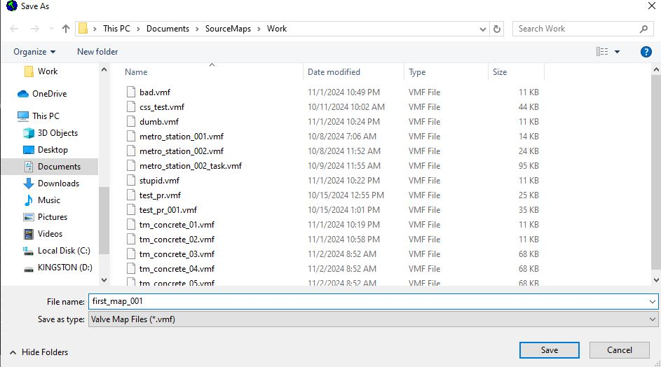
Теперь запустим карту для проверки. Оставьте место для галочки пустым и нажмите ОК.
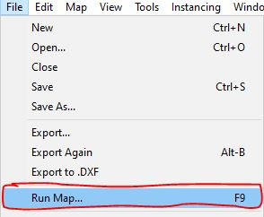
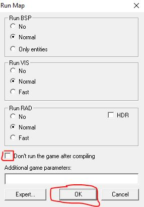
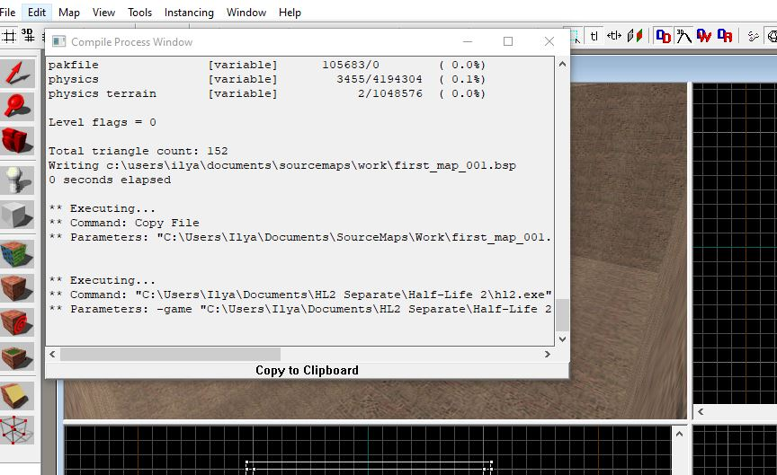
Если вы сделали все как на картинках у вас запуститься игра на вашей карте. Выйте из игры можно нажав ESC и QUIT и продолжить работу. Вы сделали первую карту, но еще необходимо много знать, для правильного процесса создания карт. Правильный подход, позволит вам избежать вылетаний программы, потерь ваших работ и серьезных ошибок. О всех этих моментах разберем в будущих уроках.
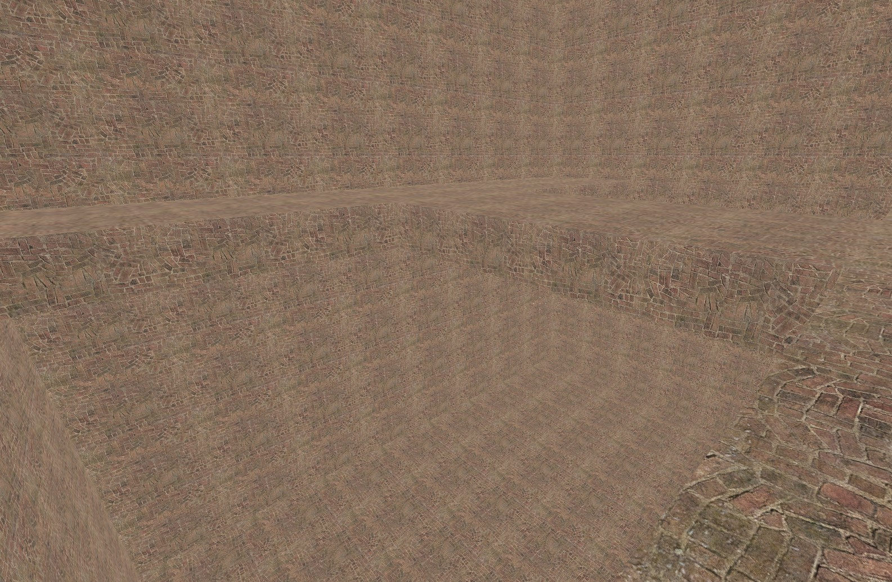